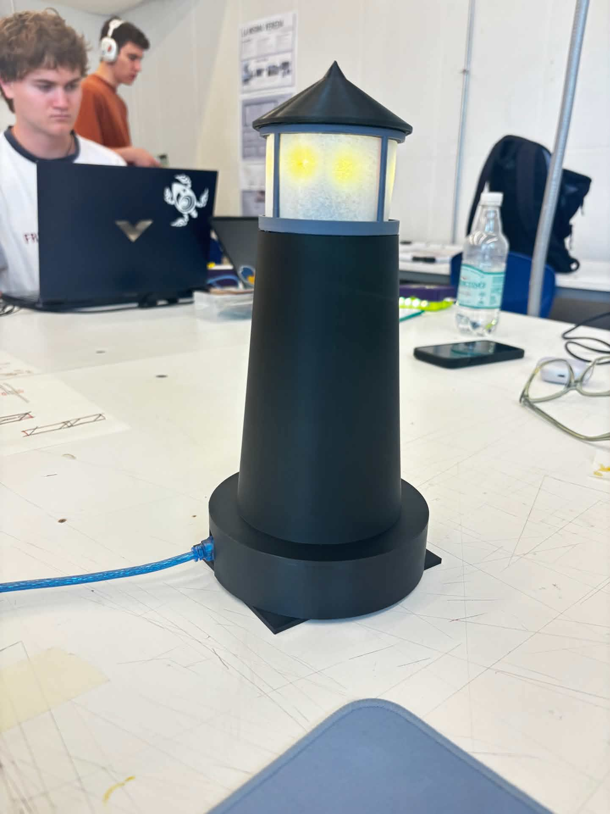
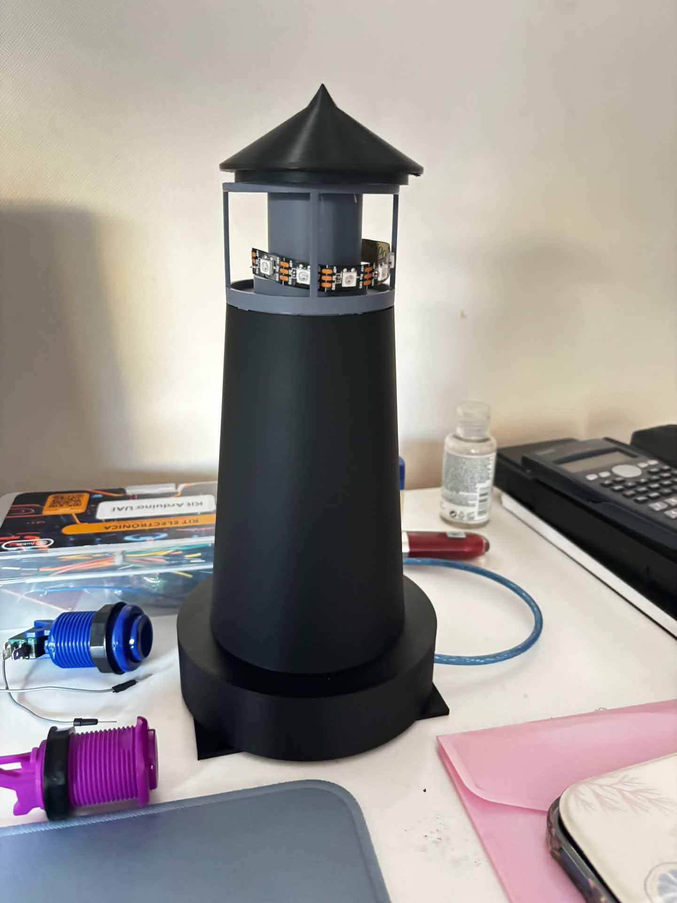
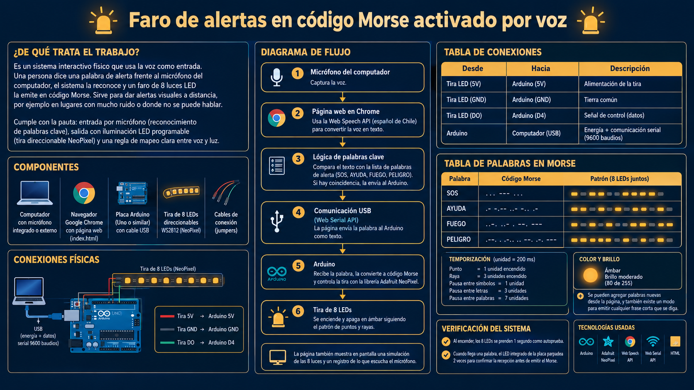

STAGE 6 · FARO MORSE
Faro de alertas en código Morse
Proyecto grupal de Taller de Interfaces · UAI
Una interfaz reconoce alertas por voz y las convierte en señales luminosas. Ocho LEDs ámbar reproducen los puntos y las rayas del mensaje en un faro impreso en 3D.

Cómo funciona
- El micrófono del computador capta una alerta y el navegador la reconoce en español de Chile.
- La interfaz busca palabras como SOS, AYUDA, FUEGO y PELIGRO. Puedes añadir tus propias alertas.
- Si el Arduino está conectado, la página envía el mensaje por USB a 9600 baudios. El Arduino convierte las letras a Morse y enciende los ocho LEDs al mismo tiempo.
SOS en Morse ··· −−− ···. Cada punto dura 200 ms y cada raya, 600 ms.
En el controlador, selecciona una palabra para ver la simulación sin Arduino. Para probar la voz o el faro físico, abre el controlador en Chrome de escritorio y habilita el micrófono o conecta la placa por USB.
Construcción del faro



Video explicativo
Conexiones y código Arduino
| Tira de 8 LEDs WS2812 | Arduino Uno |
|---|---|
| 5V | 5V |
| GND | GND |
| DIN | D4 |
El sketch usa la biblioteca Adafruit NeoPixel. Al iniciar, los ocho LEDs se encienden durante un segundo para comprobar el montaje.
Lámina del proyecto
En la lámina original figura «DO». La conexión de datos del montaje va de D4 del Arduino a la entrada DIN de la tira. Guía de conexiones de Adafruit
